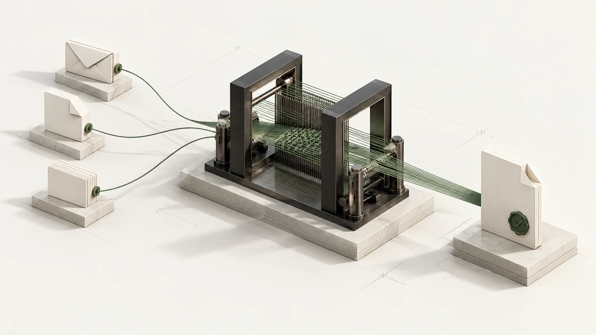

Release-plan reply
Sources
Release checklist · API test notes · Original request
AI that works in the background
Unprompted finds work in your inbox and tools, prepares replies and documents, and follows through in the background. You step in when a decision needs you.
Requests from email and messages meet the documents needed to act on them.
Unprompted is an open-source application that runs on your computer. If you connect Google, it uses the Gmail messages, Google Drive documents and optional Calendar events you authorize to find requests, gather context and prepare work. Selected context may be sent to the model you configure. Read the privacy policy.
Context from the sources you choose.
Email requests, with the surrounding conversation.
All connectors & MCP ↗It gathers relevant context, checks requirements and prepares the next step.

Prepared replies, briefs and documents. Supporting sources when you need them.
Release checklist · API test notes · Original request
Routine work stays in the background. Decisions that need you come forward.
Release details checked. Reply prepared.
Hi Jordan,
The release checklist and API tests are checked. Friday remains the target, pending confirmation of the rate-limit fix.
Please confirm the remaining dependency by Thursday at 16:00.
It tracks changes, waits for replies and resumes from saved progress.
A relevant document changes.
Prepared content is checked again.
Stale work is withdrawn or revised.
When the source changes, outdated drafts can be withdrawn.
No external action without permission.Your workspace stays on your machine. Relevant context goes to the model you choose.
Read access first. Sending or editing needs your approval or a specific authorization.
Code you can inspect. Local data and credentials are not encrypted.
Run locally. Choose a model. Connect the work you want it to watch.
git clone https://github.com/PStarH/unprompted.git
cd unprompted
npm ci --include=optional
npm startNode.js 20+ · 22+ recommended